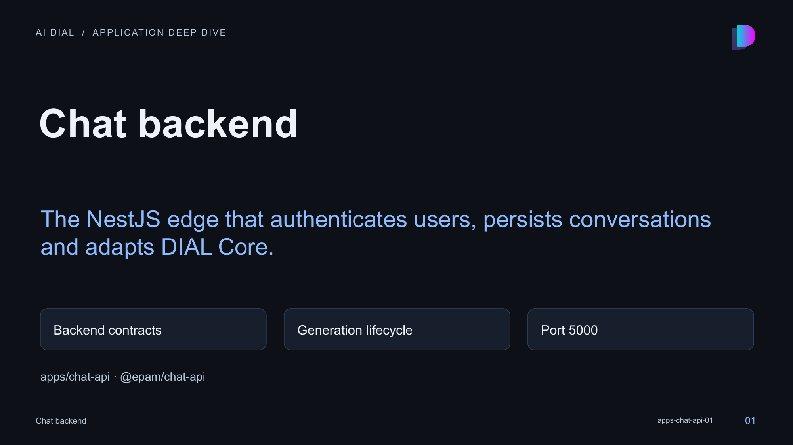

01 · Chat backend

Speaker notes and sources
chat-api is the backend-for-frontend for the React application. It also serves production frontend assets and coordinates several external systems. Distinguish its generated browser client from the server-side DIAL TypeScript SDK.
- apps/chat-api/src/main.ts:1-213
- apps/chat-api/src/app/app.module.ts:1-79